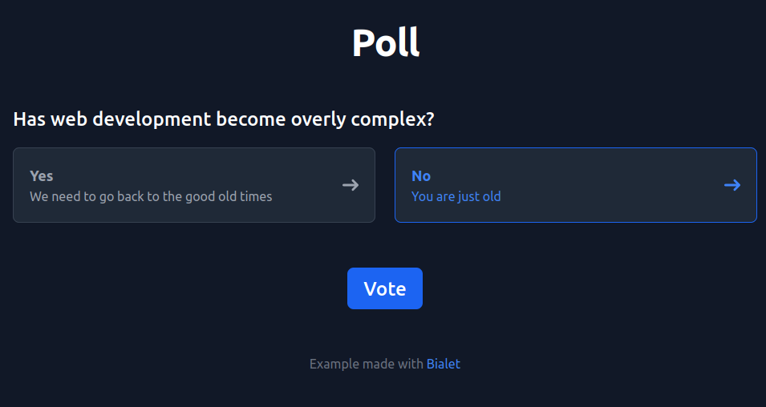
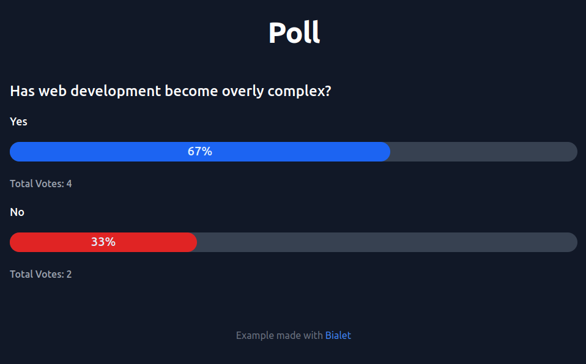

Getting Started#
We’ve got the HTML ready for a basic poll app. This getting-started will guide you through making it functional with Bialet, emphasizing how to work with pre-existing HTML structures and add dynamic content.
They are built with Flowbite and Tailwind and they consists on two HTML pages, the first one with a form to vote and the results.
Check them and download the HTML files to a new folder for the project.
vote.html 
results.html 
Our project could have other files like JavaScript, CSS, images, etc, like any other HTML project (see in MDN).
Install with Docker Compose#
Clone or download the Bialet Skeleton repository with Docker Compose. Then start the app with:
BIALET_DIR=/home/user/projects/poll docker compose up
See other installation options in the installation section.
Our first Wren file#
Now let’s create the index.wren file.
import "bialet" for Response
Response.out('<p>Hello World!</p>')
The index.wren file is the main HTML file. It works the same as the index.html file. Go to localhost:7000 to see the Hello World message.
Wren don’t use ; to separate statements, it uses new lines instead.
We import the Response class from the framework and then call the out() method
to print the HTML.
The HTML is a string. You can use " or ' to define a string.
When having HTML it is recommended to use the ' to avoid escaping the " in the attributes.
Template#
To streamline our project and avoid duplicating content across HTML files, we’ll consolidate common elements, such as headers, footers, and navigation bars, into a single file. This approach keeps our code DRY (Don’t Repeat Yourself) and simplifies maintenance.
In your project directory, create a file named _app.wren. This file will contain the Template class, where we’ll define a static layout method to render our HTML content dynamically. A static method means that we can call it directly from the class Template.layout("...").
class Template {
static layout(content) {
var html = '
<html>
<head>
<title>Poll</title>
</head>
<body>
<header>
<h1><a href=".">Poll</a></h1>
</header>
<main>
%( content )
</main>
</body>
</html>
'
return html
}
}
Inside a string we use the interpolations %( ... ), this will execute the expression and return the result.
Let’s use the Template class to render our HTML content.
import "bialet" for Response
import "_app" for Template
var html = Template.layout('So far, so good.')
Response.out(html)
In Wren we need to define each variable before usage, for that we use the var keyword.
A single expression inside a block with no new line will return the value.
{
return "Example"
}
// Could be writed instead
{ "Example" }
Before copying the vote.html code in our layout we will change it a little bit.
class Template {
// But wait, if we start a string, we can have multilines as well
static layout(content) { '
<html>
<head>
<title>Poll</title>
</head>
<body>
%( header )
<main>
%( content )
</main>
</body>
</html>
' }
// both methods works the same, returning the string
static header { '<header><h1><a href=".">Poll</a></h1></header>' }
}
Now it’s time to copy the vote.html file to our project. Also, try to create a results.html file in Wren, named results.wren. You have to escape the % with \% in order to work.
Here are the files:
We manage to replicate the HTML static content in Bialet. Now let’s make it actually work.
Logic and database#
We will step back and first solve the logic of the poll in a separate Wren file.
But first, we need to create a new table. You should have a file called _db.sqlite3 in the root of your project. That’s our SQLite database.
Use an SQLite program to interact with it, like SQLite Browser or SQLite CLI and run these queries:
CREATE TABLE simple_poll (answer TEXT PRIMARY KEY, votes INT);
INSERT INTO simple_poll VALUES ("Yes", 0);
INSERT INTO simple_poll VALUES ("No", 0);
The logic is very simple, we show all the options, then we increment when receiving a vote.
Let’s write a file called simple_poll.wren for our logic.
import "bialet" for Response
var options = `SELECT * FROM simple_poll`.fetch()
System.print(options)
Response.out('
<html>
<body>
<h1>Has web development become overly complex?</h1>
<form method="post">
%( options.map{ |opt| '
<p>
<label>
<input type="radio" name="vote" value="%(opt["answer"])">
%(opt["answer"])
</label>
</p>
' } )
<p><input type="submit" value="Vote"></p>
</form>
</body>
</html>
')
It looks like we have a string with `SELECT * FROM simple_poll` but it’s actually a Query object. Query objects are used to execute SQL queries in Bialet.
We use the fetch method to get the results of the query.
Then we call to System.print to log the results. This is very useful for debugging.
Also we use map to iterate over the results and create a template for each option.
Note that map is using a callback with block arguments.
Instead of having (), we use { } to define the block and |arg1, arg2, ...| to pass the arguments.
Then we use the same principle than in the refactored Template class, single expression implicitly returns the value.
Oh, yes you can have an interpolation in your interpolations.
In order to vote, we need to handle a POST request from the form.
import "bialet" for Request, Response
if (Request.isPost) {
var vote = Request.post("vote")
`UPDATE simple_poll SET votes = votes + 1 WHERE answer = ?`.query(vote)
System.print("Voted for %(vote)")
}
var options = `SELECT * FROM simple_poll`.fetch()
System.print(options)
// ...
Check the output in the terminal to see if it works.
The query object are prepared statement, you can’t concatenate them or having interpotations in them.
You should use the ? placeholder to pass the value to the query.
The logic is finished but let’s finish this example showing the results.
import "bialet" for Request, Response
// We will use the vote variable to see if the user voted
var vote
if (Request.isPost) {
vote = Request.post("vote")
`UPDATE simple_poll SET votes = votes + 1 WHERE answer = ?`.query(vote)
System.print("Voted for %(vote)")
}
var options = `SELECT * FROM simple_poll`.fetch()
System.print(options)
Response.out('
<html>
<body>
<h1>Has web development become overly complex?</h1>
%( !vote ? '
<form method="post">
%( options.map{ |opt| '
<p>
<label>
<input type="radio" name="vote" value="%(opt["answer"])">
%(opt["answer"])
</label>
</p>
' } )
<p><input type="submit" value="Vote"></p>
</form>
' : '
<p>Thank you for voting!</p>
<ul>
%( options.map{|opt| '<li>%(opt["answer"]) - %(opt["votes"]) votes</li>' })
</ul>
<p><a href="">Vote again</a></p>
')
</body>
</html>
')
Now we have the last interpolation trick, in order to show some code we use a ternary operator.
%( someExpression ? 'When true' : 'When false' )
And once again we have interpolations inside another interpolation.
Put it all together#
Now that we have an idea on how to handle the logic. In our complete example we need more columns in the database. This time we will use migrations.
Create a _migration.wren file in the root of the project.
import "bialet" for Db
Db.migrate("Create Poll table", `
CREATE TABLE poll (
id INTEGER PRIMARY KEY AUTOINCREMENT,
answer TEXT NOT NULL,
comment TEXT,
votes INTEGER NOT NULL DEFAULT 0
)
`)
Db.migrate("Add initial data", `
INSERT INTO poll (answer, comment) VALUES
("Yes", "We need to go back to the good old times"),
("No", "You are just old")
`)
The migrate method needs the name of the migration and the query object with the SQL code.
The name is used to avoid repeating migrations.
A good practice is to keep the logic separated from the form logic.
Let’s add a Poll class to the _app.wren file. This time the Poll class won’t use static methods, we will have a Poll object in our code.
class Template {
// ...
}
class Poll {
construct new() {}
options { `SELECT * FROM poll`.fetch() }
vote(opt) { `UPDATE poll SET votes = votes + 1
WHERE id = ?`.query(opt) }
}
We add the poll object in the index.wren file.
import "bialet" for Response
import "_app" for Template, Poll
var poll = Poll.new()
Response.out(Template.layout('
<form action="results" method="post">
<h2 class="mb-5 text-2xl font-medium text-gray-900 dark:text-white">Has web development become overly complex?</h2>
<div class="mb-6">
<ul class="grid w-full gap-6 md:grid-cols-2">
%( poll.options.map { |opt| '
<li>
<input type="radio" id="%( opt["answer"] )" name="vote" value="%( opt["id"] )" class="hidden peer" required />
<label for="%( opt["answer"] )" class="inline-flex items-center justify-between w-full p-5 text-gray-500 bg-white border border-gray-200 rounded-lg cursor-pointer dark:hover:text-gray-300 dark:border-gray-700 dark:peer-checked:text-blue-500 peer-checked:border-blue-600 peer-checked:text-blue-600 hover:text-gray-600 hover:bg-gray-100 dark:text-gray-400 dark:bg-gray-800 dark:hover:bg-gray-700">
<div class="block">
<div class="w-full text-lg font-semibold">%( opt["answer"] )</div>
<div class="w-full">%( opt["comment"] )</div>
</div>
<svg class="w-5 h-5 ms-3 rtl:rotate-180" aria-hidden="true" xmlns="http://www.w3.org/2000/svg" fill="none" viewBox="0 0 14 10">
<path stroke="currentColor" stroke-linecap="round" stroke-linejoin="round" stroke-width="2" d="M1 5h12m0 0L9 1m4 4L9 9"/>
</svg>
</label>
</li>
' })
</ul>
</div>
<div class="pt-8 flex justify-center">
<button type="submit" class="text-white bg-blue-700 hover:bg-blue-800 focus:ring-4 focus:outline-none focus:ring-blue-300 font-medium rounded-lg text-2xl w-full sm:w-auto px-5 py-2.5 text-center dark:bg-blue-600 dark:hover:bg-blue-700 dark:focus:ring-blue-800">Vote</button>
</div>
</form>
'))
Wren does not have a default constructor, we use the constructor keyword on any method and use that method to create the object.
Naming the method new is a good practice.
We will handle the form. We usually handle it in the same page the form is on. This way if we need to show an error we don’t need to go back to the form. Once we know the form was correctly validated we can redirect to the results page.
import "bialet" for Request, Response
import "_app" for Template, Poll
var poll = Poll.new()
if (Request.isPost) {
var vote = Request.post("vote")
poll.vote(vote)
System.print("Voted for %(vote)")
// Redirect to the results page and stop the script
Response.redirect("/results")
return
}
// Remember to change the action attribute in the form!
Response.out(Template.layout('
<form action="/" method="post">
...
</form>
'))
With Request.isPost we check if the request is a POST request.
We get the request data with the method Request.post.
We use Response.redirect to redirect to the results page. After a redirect we use return outside a method to stop the script.
Back to the results page we create a Poll instance. Remember, this will be created each time the page is called. But first add a percentage method and a totalVotes property to the poll class.
class Poll {
// ...
totalVotes { Num.fromString(`SELECT SUM(votes) as total FROM poll`.first()["total"]) }
percentage(opt) { Num.fromString(opt["votes"]) / totalVotes * 100 }
}
All the variables we receive from the database are strings.
We need to convert them to numbers with the Num.fromString method before we can use them.
import "bialet" for Response
import "_app" for Template, Poll
var poll = Poll.new()
System.print(poll.options)
Response.out(Template.layout('
<h2 class="mb-5 text-2xl font-medium text-gray-900 dark:text-white">Has web development become overly complex?</h2>
%( poll.options.map{ |opt| '
<h3 class="mt-2 mb-5 text-lg font-medium text-gray-900 dark:text-white">%(opt["answer"])</h3>
<div class="w-full bg-gray-200 h-8 mb-6 rounded-full dark:bg-gray-700">
<div class="bg-blue-600 text-xl h-8 font-medium text-blue-100 text-center p-1 leading-none rounded-full" style="width: %( poll.percentage(opt) )\%"> %( poll.percentage(opt) )\%</div>
</div>
<p class="mb-5 text-md font-medium text-gray-700 dark:text-gray-400">Total Votes: %(opt["votes"])</p>
' })
'))
We are almost done. Let’s list the problems we need to fix:
What happened to the red color in No?
We are doing multiples queries to the same data.
Add rounding to the percentage.
Results is failing when there are no votes.
For the colors we add two new migrations:
Db.migrate("Add color column", `
ALTER TABLE poll ADD COLUMN color TEXT
`)
Db.migrate("Add color data", `
UPDATE poll SET color = "blue" WHERE answer = "Yes";
UPDATE poll SET color = "red" WHERE answer = "No";
`)
All the other problems will be fixed in the Poll class, here is the final version:
class Poll {
construct new() {
_opts = null
_total = null
}
// Fetch the options from the database into the `_opts` property.
// Queries are part of Bialet.
options { _opts || (_opts = `SELECT * FROM poll`.fetch()) }
// Add parameters to the query like a prepared statement.
vote(opt) { `UPDATE poll SET votes = votes + 1
WHERE id = ?`.query(opt) }
// Getter to get the total number of votes.
totalVotes { _total || (_total = options.reduce(0, Fn.new{|sum, opt| sum + votes_(opt) }))}
// Calculate the percentage of votes for an option
percentage(opt) { totalVotes > 0 ? ((votes_(opt) / totalVotes) * 100).round : 0 }
// Use the method to get the votes as a number.
// There is no access modifier in Wren. Add an underscore at the end
// of the method name to identify it as private.
votes_(opt) { Num.fromString(opt["votes"]) }
}
We define the
_optsand_totalproperties in the constructor.We use
||to set the value of a property in a one-liner.We use
Fn.newto create a function object for thereducecallback.We use
votes_to get the votes as a number. This is a private method convention.(votes_(opt) / totalVotes * 100).roundwill call the round property on the Number. Remember that Wren is object oriented!
We are done!
Here are the final files: